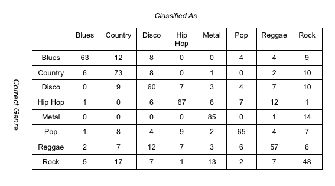

Our Team
We're all seniors at Northwestern University, and this is our final project for EECS 349 Machine Learning with Professor Pardo at Northwestern University.


Introduction
Goals and Process
Our goal for this project was to design a system that is able to determine a song’s genre based on low-level audio features. We conducted a comparative analysis between classification using audio features and classification using lyrics. If the accuracy of lyric-based classification had proved to be significantly higher than using prior probability, we would have attempted to use boosting to combine lyric- and audio feature- based classification to create a more powerful classifier, but our tests showed that a naïve Bayesian classifier using lyrics fails to outperform prior probability by a statistically significant margin, so our genre classifier ultimately relied solely on analysis of low-level audio features, adnd the boosting of those features.
Motivation
Our interest in this topic arises primarily from a passion for music. The process of classifying genres with a machine learning method will reveal a lot about the fundamental characteristics of different genres and the underlying mathematical nature of all music. This could have many applications, both in music reccomendation and genre classification, but also in theoretical implications for automated song generation.
Our Approach
In order to conduct a comparitive analysis of different classification methods, we approached genre classification from two completely different angles. The first approach utilized Music Information Retrieval (MIR) methods to extract audio features and use these features to train a Bayes Net classifier. We trained our Bayes Net classifier in Weka. We then used the AdaBoost algorithm to optimize on our results, using 10 iterations to improve results without risking even more significant overfitting. We used MARSYAS to provide the following features to our bayes net classifier:
Spectral Rolloff
Time domain zero crossings
The second approach instead makes use of lyrical content, and constructs a Naïve Bayesian Classifier to determine a song's genre based on its lyrics. We experimented with three different classification techniques, two of which were Naïve Bayesians, one taking into consideration the frequency with which a word occurs in a given song, and the other ignoring. The third technique we used classified solely upon number of words in a song.
Dataset
In order to conduct our comparative analysis of these two approaches to the genre classification problem, we used the GTZAN Dataset, which was also developed by George Tzanetakis. This dataset consists of 100 short song clips in each of 10 genres. The clips are each about 30 seconds long, and are drawn from a variety of sources, including live performances and radio broadcasts in addition to typical studio recordings.
The dataset doesn't come with song title and artist information, but we were able to obtain this information for most songs thanks to the research of Bob Sturm. Since the jazz and classical songs included in the dataset are all completely instrumental and therefore don't have lyrics for us to analyze, we decided to work with the other 8 genres only. These genres are blues, country, disco, hip hop, metal, pop, reggae, and rock. To get the corresponding lyrics for each song, we used a python script to extract lyrics from the ChartLyrics API
Results
Classification With Audio Features
First of all, in using all of the audio features presented above with a Bayes Net learner, we were able to achieve 61.125% accuracy in overall classification, which is similar to the 61% accuracy reported by George Tzanetakis in his paper on genre classification.
Using the AdaBoost algorithm on top of our Bayes Net classifier, we were able to improve the accuracy to 64.75%. The confusion matrix for this method is shown below:
Classification With Lyrics
Neither of the Naive Bayes methods to use lyrics as the basis for a genre classifier worked well in practice.
Frequency-Independent Method
This method worked just about as well as prior probability. The mean correct classification rate was 0.1275, which made no statistically significant difference.

Frequency-Dependent Method
This method was nowhere near as successful as the previous method, which wasn't any good itself. We found a mean correct classification rate of 0.900. This was significantly different from the prior probability of 0.125, but worse.

Word Count Method
This method is very naive and we didn't expect it to be very successful at all. However, using we saw a mean correct classification rate of 0.2325. This proved statistically better than prior probability. The plot of correct classification rate and the confusion matrix are shown below.

To see a more detailed analysis of the results, their potential causes, and their implications, please read the Extended Abstract Below.
Paper
Our extended abstract, available at the link below, provides further information on the project.